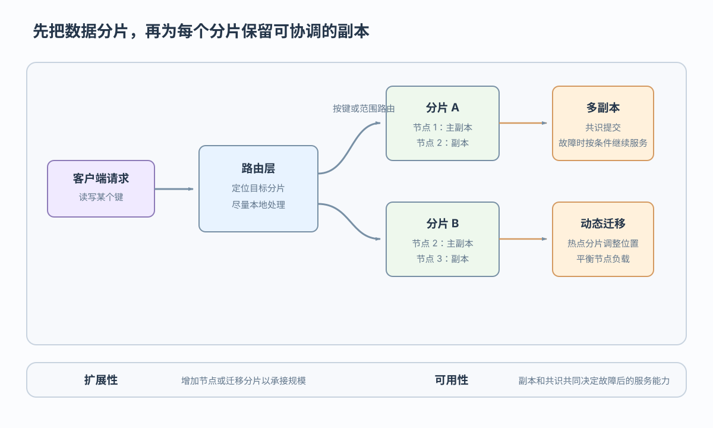

分片
拆分不同数据，扩展容量与并行；跨片查询和事务需要协调
业务需求和硬件条件共同约束数据库架构取舍
 VER. 2608.3
Built with impress.js
VER. 2608.3
Built with impress.js
完成本节后，你应该能够
好的分片把请求尽量留在目标分片，减少跨节点通信

定位容量压力或访问热点
按键或范围把不同数据划入分片
把请求发送到持有目标数据的分片
尽量在目标分片完成查询或事务
分片把规模问题拆开，但跨片查询和跨片事务仍需通信与协调，热点变化时还可能需要重新分布
能否继续服务取决于副本位置、法定人数和故障范围
拆分不同数据，扩展容量与并行；跨片查询和事务需要协调
保存同一分片的多份数据；冗余带来存储和复制延迟
协调副本对提交状态的一致判断；失去法定多数时可能等待
副本保存多个状态；共识决定哪个状态可以作为提交结果
在采用多数派法定人数的三副本配置中，至少两个副本可达时可能继续提交；是否继续还取决于共识配置和故障范围
硬件变化改变性能成本中心，但不消除持久性、网络故障和分布式协调问题
| 硬件条件 | 带来的机会 | 必须承担的取舍 |
|---|---|---|
| 多核与众核 | 并行查询与事务执行 | 共享状态与并发控制成本 |
| 大内存与 NVM（非易失性存储器） | 更多数据驻留内存，部分访问与持久化代价下降 | 存储层次、持久性与恢复仍需设计 |
| 高速网络与 RDMA（远程直接内存访问） | 降低远程访问代价，支持计算与存储解耦尝试 | 网络故障、远程一致性与资源隔离 |
硬件变化可以降低部分访问成本，但内存数据库仍需设计存储、查询和恢复
托管服务简化部署；资源解耦可以提高弹性，但也增加网络、协调和运维边界
| 路径 | 资源组织 | 适合的变化 | 新增边界 |
|---|---|---|---|
| 传统云托管 | 数据库实例与基础设施绑定程度较高 | 简化部署与运维 | 扩展粒度受实例形态影响 |
| 云原生路线 | 计算、服务与存储可以按负载解耦 | 查询量或数据量变化时弹性调整 | 网络、元数据、隔离与运维复杂度 |
云原生按负载选择计算、服务与存储的解耦边界
订单写入与经营分析共享业务事实，但必须约定新鲜度、可见性和隔离方式
同一业务数据不等于同一物理副本；物理上可以有行存与列存副本，但会增加同步和隔离成本
订单提交后报表允许延迟几秒，还是必须读到刚提交结果，是不同的新鲜度要求
HTAP 的副本刷新与共存策略决定报表新鲜度和事务隔离成本
DB4AI 支撑人工智能的数据处理与治理；模型准确性和数据合规仍需额外验证
筛选、连接并构造训练数据
选择数据处理计划和资源路径
协调 CPU、GPU 等资源，同时承担数据搬运代价
管理权限、血缘、敏感数据与质量规则
DB4AI 能支撑数据准备、查询优化、异构执行和治理，但不能替代模型评估与合规判断；GPU 细节取决于具体实现
模型选择先看数据形态与访问方式，统一入口不消除模型语义和事务边界
| 模型 | 典型访问 | 典型边界 |
|---|---|---|
| 关系 | 约束、连接和精细事务 | 结构约束与事务边界清晰 |
| 键值 | 按键点查、缓存和简单读写 | 关系连接语义通常较弱 |
| 文档 | 灵活嵌套且变化较快的内容 | 跨文档事务与约束取决于实现 |
| 图 | 多跳关系和网络结构 | 图查询语义不同于关系连接 |
| 时序 | 按时间连续写入和窗口聚合 | 适合时间窗口，不替代通用事务模型 |
多模型系统可以共享入口、跨模型优化和资源调度，但具体接口、一致性和事务能力取决于实现
每个新架构只缓解部分压力，也会带来协调、恢复、隔离或治理成本
分片与迁移缓解规模压力，但系统仍要承担跨片通信和重新分布成本
副本与共识支持受控集群的提交协调；复制、存储和仲裁会增加成本
云原生可以按负载解耦资源；网络、元数据和运维边界更复杂
HTAP、DB4AI 与多模型扩大应用范围；新鲜度、隔离和治理要求上升
需求压力 → 硬件条件 → 架构机制 → 协调、恢复、隔离与治理代价